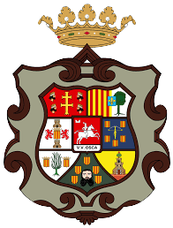
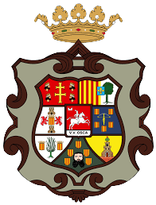

beamajones@gmail.com
(+34) 656377588
© Sergi Artacho Martínez, Singulars 2020
Bienvenido al Granero del Conde, una posada familiar en un entorno privilegiado, a los pies de los Pirineos Aragoneses.6 acogedoras habitaciones dobles con calefacción y Tv, baño completo y unas vistas increíbles al Pirineo.
Bar Restaurante - Un acogedor restaurante con zona de bar y chimenea de leña. Disponemos de Menú del día y Carta.Arres es un pequeño y tranquilo pueblo en el camino de Santiago que conserva su arquitectura tradicional. Sus vistas al canal de Berdún, a los pirineos y su cercanía a Jaca y los valles pirenaicos hacen de este un lugar privilegiado.
Casa Sarasa es una casa de turismo rural en el Pirineo Aragonés, muy cerca de Jaca, San Juan de la Peña y el Monasterio de Leyre. Ofrece varios tipos de alojamiento: apartamentos, estudios y habitaciones que dan directamente a un gran jardín. Admite mascotas.
El Albergue de Artieda es una propiedad municipal que dispone de 16 plazas. Lo forman 4 habitaciones con 2 literas y dos baños compartidos. Los baños están equipados con dos duchas y dos wc cada uno. Cada baño dispone de pila de lavado a mano. También contamos de servicio de lavadora, secadora y tendedero exterior.
Nuestrxs huéspedes podrán hacer uso de un salón compartido, donde poder descansar en el sillón o sofá a leer algún libro de nuestra biblioteca o jugar alguno de los juegos de mesa que disponemos.
El Hostal Bosque de Gamueta abre sus puertas en mayo de 2020, estamos en el pirineo, en el valle de Ansó a 900m de altitud, en unos de los considerados pueblos más bonitos de España. Ofrecemos 4 habitaciones completas, pensadas para todas las personas que nos quieran visitar, es 100×100 accesible, reunimos las exigencias sanitarias requeridas para evitar la propagación del Covid-19 y os esperamos para que disfruteis de unos días de descanso.
Nuestro nombre alude a un singular bosque de abetos y hayas centenarios ubicado en Ansó, considerado uno de los más importantes y extensos del pirineo, una invitación a conocerlo y disfrutarlo.
 
